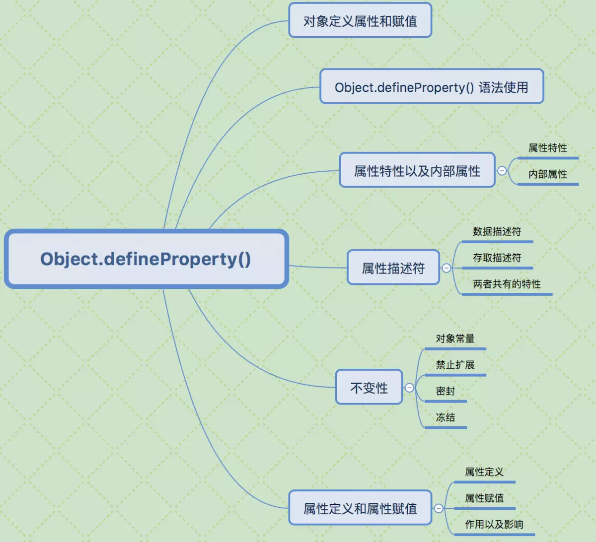

vue响应式原理
Vue.js是一款MVVM框架，上手快速简单易用，通过响应式在修改数据的时候更新视图。
Vue.js的响应式原理依赖于 Object.defineProperty ，尤大大在Vue.js文档中就已经提到过，这也是Vue.js不支持IE8 以及更低版本浏览器的原因。
Vue通过设定对象属性的 setter/getter 方法来监听数据的变化，通过getter进行依赖收集，而每个setter方法就是一个观察者，在数据变更的时候通知订阅者更新视图。

Object.defineProperty()语法说明
Object.defineProperty()的作用就是直接在一个对象上定义一个新属性，或者修改一个已经存在的属性
Object.defineProperty(obj, prop, desc)
1.obj 需要定义属性的当前对象
2.prop 当前需要定义的属性名
3.desc 属性描述符
Object.defineProperty(Person, 'name', {
value: 'jack',
writable: true // 是否可以改变
})
一般通过为对象的属性赋值的情况下，对象的属性可以修改也可以删除，但是通过Object.defineProperty()定义属性，通过描述符的设置可以进行更精准的控制对象属性。